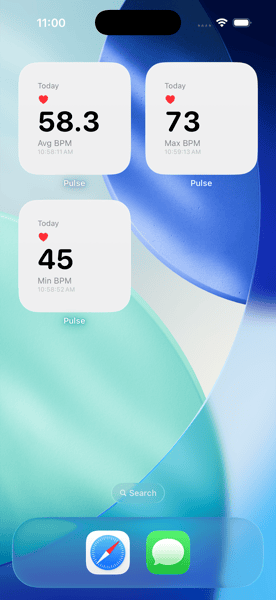
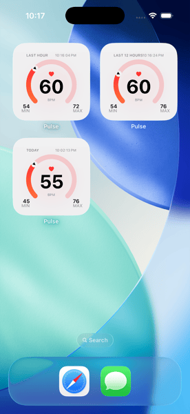
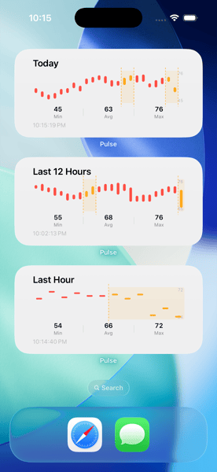

Time-windowed stats
Min, max, and average heart rate over the windows that matter: the last hour, the last 12 hours, today, and this month. Pick the window and the stat per widget and read it without unlocking your phone.
A native iPhone and Apple Watch app for your HealthKit heart-rate data — glanceable widgets, complications, and stats. Every beat kept private, 100% on-device.
Pulse is a native iPhone and Apple Watch app that turns your HealthKit heart-rate data into glanceable widgets, complications, and stats. No accounts, no servers, no setup — install it, grant HealthKit access, and the widgets fill in.
The Health app shows you yesterday's chart. Pulse shows you today's pulse at a glance — on your Home Screen, your Lock Screen, and your Watch face. Time windows, gauges, and charts, side by side with the rest of your day.

Min, max, and average heart rate over the windows that matter: the last hour, the last 12 hours, today, and this month. Pick the window and the stat per widget and read it without unlocking your phone.

An arc gauge plots your current heart rate against the range you care about, with min and max anchored at the corners. Glance- readable at any widget size, on iPhone or Apple Watch.

Your heart-rate trace as a small chart, sized for the Home Screen. Watch the shape of your day — workouts, naps, that one stressful meeting — without opening the Health app.